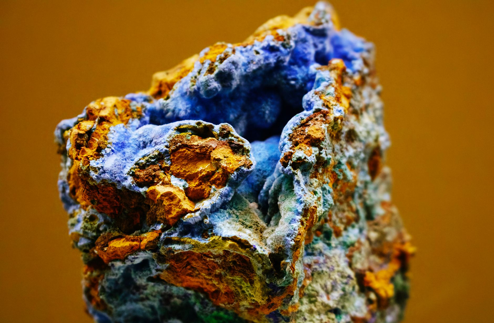

남미 리튬·니오븀 쟁탈전, 韓 AI 소재 조달 5년이 갈린다

칠레·아르헨티나·볼리비아 3국이 보유한 리튬 매장량은 전 세계 확인 매장량의 약 58%에 달한다. 브라질은 별도로 세계 매장량 90% 이상을 차지하는 니오븀(Nb) 생산 거점이며, 이 두 광물은 AI 서버 배터리·전력 변환 소자·반도체 공정 소재로 수요가 겹친다.
미국은 IRA(인플레이션 감축법) 발효 이후 자유무역협정(FTA) 체결국 광물 우선 조달 조항을 앞세워 칠레·아르헨티나와 핵심광물협정 협상을 진행 중이다. EU는 CRMA(핵심원자재법) 기반으로 2025년까지 남미 리튬 직수입 비중 10%p 확대를 목표로 하고 있으며, 중국은 SQM·Albemarle 외 복수의 칠레 리튬 광구에 지분을 보유하고 있다.
한국의 배터리용 탄산리튬·수산화리튬 수입 중 중국 가공 경유 비중은 약 80%로 추정된다. POSCO홀딩스가 아르헨티나 옴브레 무에르토 광산에서 리튬 생산을 추진 중이나, 연간 생산 목표 2만 5,000t 달성 시점은 2027년 이후다. 그 사이 중국이 탄산리튬 가공 단계에서 추가 통제를 걸 경우 한국 배터리 3사(LG에너지솔루션·삼성SDI·SK온)의 소재 조달 원가는 즉각 타격을 받는다.
AI 서버 확대에 따른 배터리 수요와 전력 변환용 니오븀 합금 수요는 2030년까지 현재 대비 3~4배 성장 전망(IEA, 2024 기준)이 나온다. 남미 광물 확보에 뒤처진 공급자는 가공 단계에서 중국 의존을 피할 수 없는 구조다. 한국이 남미 광물 직수입 루트를 확보하지 못하면, '소재 국산화' 구호는 가공만 국내에서 하는 절반짜리 독립에 그친다.
이번 남미 쟁탈전의 핵심은 광물 채굴권이 아니라 '가공 단계의 주도권'이다. 리튬을 캐도 탄산리튬·수산화리튬으로 정제하는 공정을 중국이 쥐고 있으면, 원광 직수입은 있으나 마나다. 미국과 EU가 남미와 체결하려는 협정의 실질 목표는 채굴보다 정제 공정의 비중국화에 있다.
한국 입장에서 남미 전략광물 확보는 배터리 소재에만 국한되지 않는다. 니오븀은 반도체 고유전율 게이트 산화막(High-k 소재) 후보 물질로, 차세대 로직 반도체 공정에서 수요가 열릴 가능성이 있다. 브라질이 니오븀 수출 조건을 강화할 경우, 한국 반도체 소재 기업의 선제적 장기 계약이 없으면 구매 기회 자체가 사라진다.
POSCO홀딩스는 아르헨티나 리튬 광산 프로젝트를 통해 국내 유일의 남미 리튬 직접 공급 루트를 확보했다. 2027년 연 2만 5,000t 생산이 현실화되면 LG에너지솔루션 등 배터리 3사의 중국 가공 의존도를 10~15%p 낮출 수 있는 물량이다.
브라질 CBMM(Companhia Brasileira de Metalurgia e Mineração)을 통해 니오븀 장기 공급 계약을 먼저 확보한 철강·소재 기업들이 수혜 구간에 있다. 현재 POSCO·현대제철은 CBMM과 기존 거래 관계를 유지 중이며, 반도체 소재 전환 수요가 열릴 경우 공급 우선권을 가질 가능성이 높다.
배터리 소재 가공을 중국 업체에 위탁하는 구조를 유지 중인 중소 배터리 소재 기업들은 남미 공급망 재편 과정에서 원가 압박과 공급 불안을 동시에 받는다. 직수입 루트 없이 중국 가공 리튬에 의존하는 업체는 가격 협상력을 잃을 수 있다.
남미 광물협정 협상에서 제외된 비FTA 국가들은 조달 단가가 최대 15~20% 높아지는 구조적 불이익을 받는다. 한국은 칠레와 FTA를 유지하고 있으나, 아르헨티나·볼리비아와는 핵심광물 협정 협상이 초기 단계에 머물러 있다.
배터리·반도체 소재 조달 담당자는 중국 가공 리튬 비중을 즉시 재산정해야 한다. POSCO홀딩스 아르헨티나 프로젝트 생산 개시(2027년 예정) 이전까지의 공백을 어떤 루트로 메울지를 2025년 말까지 결정하지 않으면 2026~2027년 조달 일정이 공전할 수 있다.
개인 투자자는 POSCO홀딩스의 남미 리튬 프로젝트 진척 공시와 아르헨티나 정치 리스크를 동시에 모니터링해야 한다. 아르헨티나 환율·자원 국유화 정책 변화는 생산 일정을 6~12개월 단위로 지연시킬 수 있는 변수다.
니오븀 관련 기업 투자자는 브라질 CBMM 공급 계약 보유 여부와 High-k 소재 개발 파이프라인을 기업 평가 기준에 포함시킬 것을 권한다. 차세대 반도체 공정에서 니오븀 수요가 열리는 시점은 2028~2030년으로 예측되며, 장기 계약 없이 스팟 조달에 의존하는 기업은 공정 전환 시점에 가격 급등 리스크를 고스란히 받는다.
실제 조달 현장에서는 — 남미 광물을 '미래 대안'으로만 보는 관성이 여전히 강하다. 그러나 현장에서 이미 포착되는 신호는 다르다. 중국 정제 리튬의 리드타임이 2023년 대비 30~40% 늘어난 구간이 발생하고 있고, 가격 협상 기준이 스팟에서 장기 계약 전환을 요구하는 방향으로 바뀌고 있다. 지금 당장 남미 직수입 루트를 확정하지 않으면, 3년 후 구매 의사결정 시점에는 선택지 자체가 좁아져 있을 것이다.
이 포스팅은 쿠팡 파트너스 활동의 일환으로 수수료를 제공받습니다.